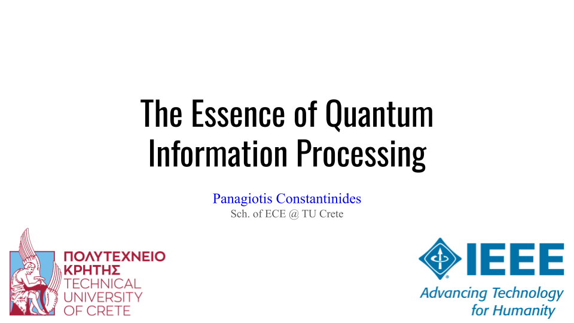

I try to regularly organize (or co-organize) seminars and workshops in the broader field of quantum technologies and scientific computing. Most of the material is organized to appeal to an audience with minimal to intermediate technical understanding. If you would like me to give a talk at your institution or event, please feel free to reach out!

The Essence of Quantum Information Processing
Date: October, 2025
Location: Sch. of ECE, TU Crete
A first approch to quantum computing focused on the core phenomena that make it algorithmicly interesting. Organized in collaboration with the local IEEE student branch.
Trapped Ion Quantum Computing
Date: July, 2024
Location: Sch. of ECE, TU Crete
A review of the quantum dynamics that govern the control of trapped ion systems and make quantum computing possible with such systems. A presentation for partial completion of the "Quantum Technologies" course.